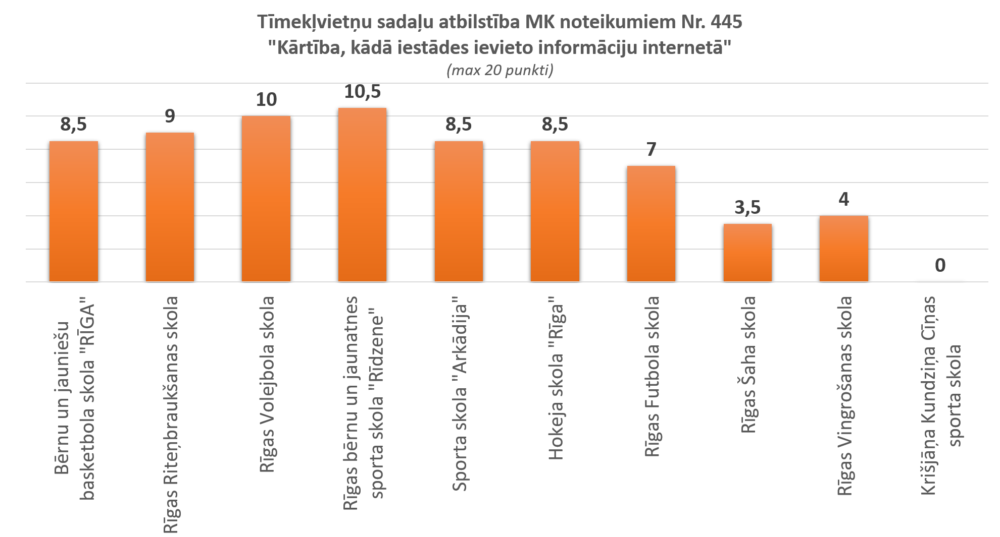

Sporta skolas 
Latvijas sporta skolu tīmekļvietnes tika analizētas, balstoties uz MK noteikumiem MK noteikumiem Nr. 445 "Kārtība, kādā iestādes ievieto informāciju internetā". Izpētes rezultātā var secināt, ka sporta skolu tīmekļvietņu struktūra tikai daļēji atbilst MK noteikumiem. Tīmekļvietnēs nebija vienotas struktūras un viena un tā paša rakstu informācija atrodas dažādās sadaļās, piemēram, informācija par darbības virzienu un mērķiem bija atrodama titullapā, sadaļā “Par mums” un sadaļā “Skolas vēsture”. Šis aspekts apgrūtināja kvalitātīvu mājaslapu izvērtējumu. Vispozitīvāk ir novērtējamas sekojošu sporta skolu tīmekļvietnes – Rīgas Volejbola skola un Rīgas bērnu jaunatnes sporta skola “Rīdzene”. Savukārt pašlaik zemāko vērtējumu ieguva Rīgas Šaha skolas un Rīgas Vingrošanas skolas tīmekļvietnes. Kā arī, tika konstatēts, ka Krišjāņa Kundziņa Cīņas sporta skolai vispār nav izveidota tīmekļvietne, kaut arī skola ir minēta Rīgas Izglītības, kultūras un sporta departamenta publicētajā sporta iestāžu sarakstā. Sadaļas, kuras gandrīz nav atrodamas dotajās tīmekļvietnēs ir: “Īpašumi”, “Publikācijas un pārskati”, “Budžets”.